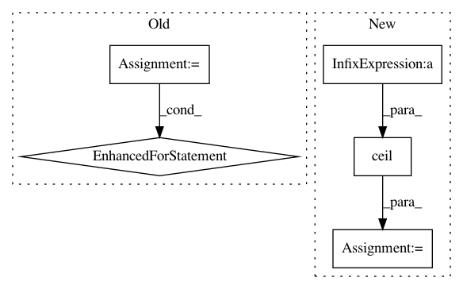

8f747275eefcab1439804f8bafd7997e0abdf37a,art/attacks/evasion/adversarial_patch/adversarial_patch_tensorflow.py,AdversarialPatchTensorFlowV2,generate,#AdversarialPatchTensorFlowV2#Any#Any#,251
Before Change
y = check_and_transform_label_format(labels=y)
for i_iter in range(self.max_iter):
loss = self._train_step(images=x, target=y)
if divmod(i_iter, 10)[1] == 0:
logger.info("Iteration: {} Loss: {}".format(i_iter, loss))
return self._patch.numpy(), self._get_circular_patch_mask().numpy()[0]
def apply_patch(self, x, scale, patch_external=None):
After Change
tf.data.Dataset.from_tensor_slices((x, y))
.shuffle(10000)
.batch(self.batch_size)
.repeat(math.ceil(self.max_iter / (x.shape[0] / self.batch_size)))
)
i_iter = 0
for images, target in ds:
if i_iter >= self.max_iter:
break
loss = self._train_step(images=images, target=target)
if divmod(i_iter, 10)[1] == 0:
logger.info("Iteration: {} Loss: {}".format(i_iter, loss))
i_iter += 1
return self._patch.numpy(), self._get_circular_patch_mask(nb_images=1).numpy()[0]
def apply_patch(self, x, scale, patch_external=None):
In pattern: SUPERPATTERN
Frequency: 3
Non-data size: 5
Instances
Project Name: IBM/adversarial-robustness-toolbox
Commit Name: 8f747275eefcab1439804f8bafd7997e0abdf37a
Time: 2020-04-01
Author: beat.buesser@ie.ibm.com
File Name: art/attacks/evasion/adversarial_patch/adversarial_patch_tensorflow.py
Class Name: AdversarialPatchTensorFlowV2
Method Name: generate
Project Name: tensorflow/models
Commit Name: d04c9e9ba382be370eba671b6e5efc3403e24d6c
Time: 2021-01-25
Author: yonib@google.com
File Name: research/object_detection/builders/dataset_builder.py
Class Name:
Method Name: read_dataset
Project Name: deepchem/deepchem
Commit Name: 5273d873b9154ad706bfdfcf4fc8e2354fd425c0
Time: 2016-01-16
Author: bharath.ramsundar@gmail.com
File Name: deepchem/models/__init__.py
Class Name: Model
Method Name: predict